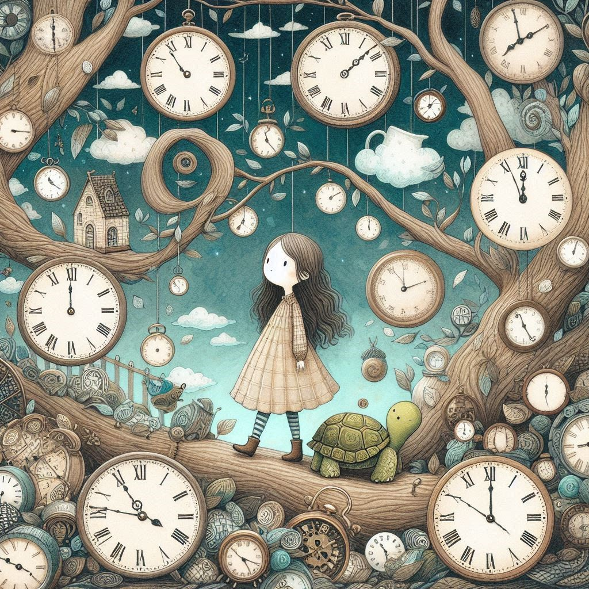

작가
미하엘 엔데
출판일
1973년
감상평에 대한 AI그림
모모는 시간이란 단순히 절약해야 하는 것이 아니라, 온전히 살아가야 하는 것임을 깨닫게 해주는 작품이다. 모모가 현대 사회의 바쁜 일상 속에서 여유와 경청의 가치를 다시금 생각하게 만든다. 어린이뿐만 아니라 어른에게도 깊은 울림을 주는 철학적 동화이다.

감상평에 대한 AI평가
이 감상평은 긍정적이고 사색적인 감정이 담겨 있으며, 다음과 같은 요소를 포함하고 있습니다.
✨ 감탄과 깨달음 : 시간을 대하는 태도에 대한 깨달음을 강조하며 철학적 사색을 담고 있음
✨ 공감과 현실 비판 : 현실과 연결해 작품의 메시지를 비판적 시각으로 분석함
✨ 감동과 추천의 의미 : 감동을 표현하며 작품의 가치를 높이 평가함